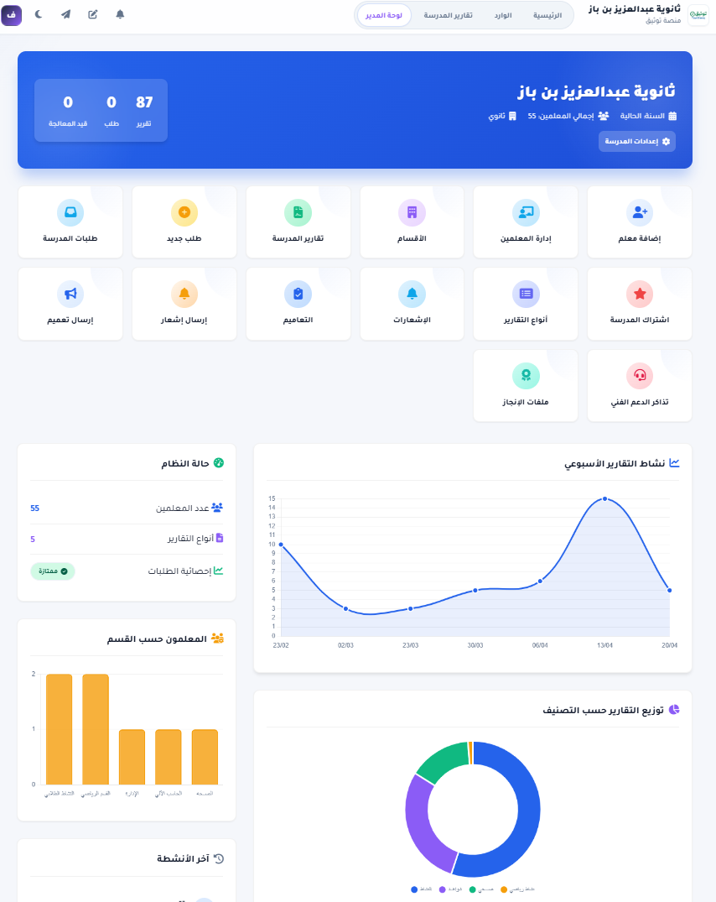
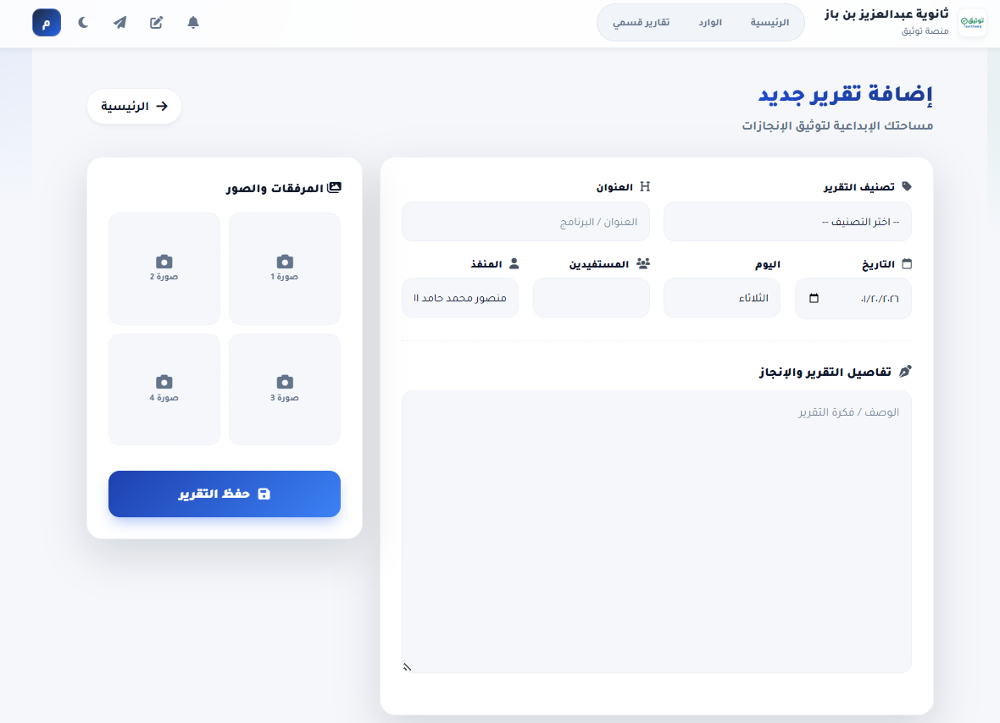
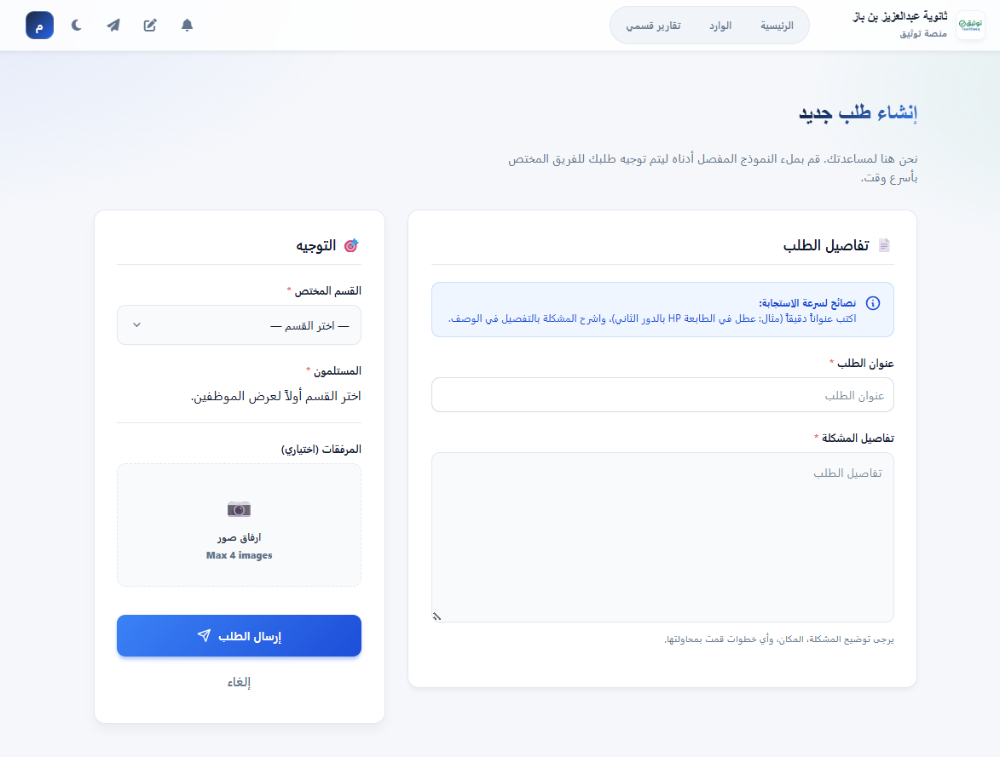
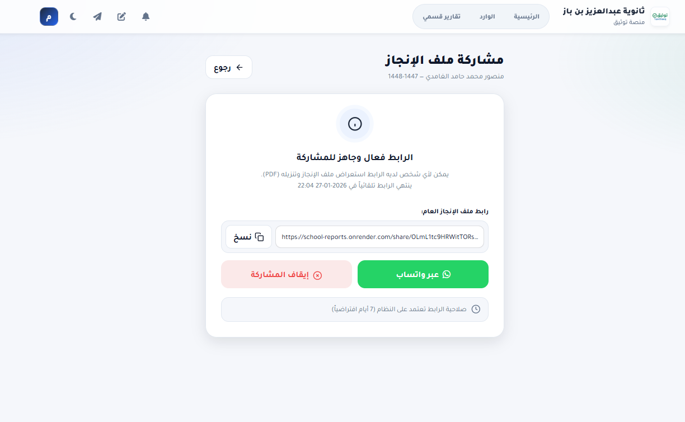
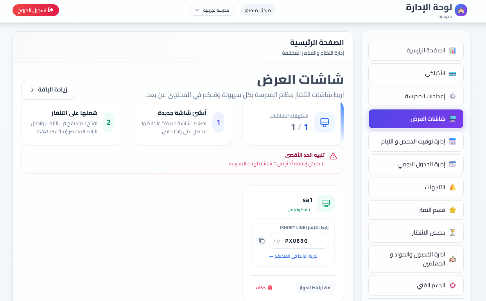

منصة التوثيق والإدارة

متابعة المهام، توثيق الإنجازات، وحفظ الأدلة بشكل مؤسسي.
نقدّم لك تكاملًا احترافيًا بين منصة التوثيق والإدارة ومنصة شاشات العرض المدرسية، لتقود مدرسة أكثر تنظيمًا، أعلى كفاءة، وأوضح أثرًا أمام المجتمع التعليمي.
0
حلول متكاملة
0
دعم عربي RTL
0
جاهزية تشغيل
0
قرار أسرع
لوحة المدرسة الرقمية
إدارة وتوثيق + عرض وإبراز
منصة التوثيق والإدارة

متابعة المهام، توثيق الإنجازات، وحفظ الأدلة بشكل مؤسسي.
منصة شاشات العرض

إعلانات وتنبيهات وجداول وإنجازات بصيغة عرض جذابة داخل المدرسة.
رسالة موحدة، تنفيذ منظم، وصورة مدرسية قوية أمام الجميع.
التحدي الحالي في المدارس
كثير من المدارس تعمل بأدوات متفرقة، وهذا يسبب بطئًا في التواصل، ضعفًا في التوثيق، وصعوبة في إبراز الإنجازات الحقيقية.
الرسائل لا تصل في الوقت المناسب بين الإدارة والمعلمين والطلاب والزوار.
الإعلانات موزعة بين قنوات غير موحدة، مما يفقدها أثرها وسرعة انتشارها.
الإنجازات والمهام لا تُحفظ في نظام واضح يدعم المتابعة والمراجعة.
متابعة العمل تعتمد على اجتهادات فردية بدلًا من لوحة تشغيل موحدة.
الإنجاز موجود لكنه لا يظهر بصريًا بشكل احترافي يعكس جودة المدرسة.
الاعتماد على وسائل قديمة يضعف الصورة المؤسسية ويستهلك وقت الفريق.
الحل المتكامل
المنتج الأول
تنظم الأعمال اليومية، تتابع التنفيذ، تحفظ الأدلة والشواهد، وتمنح الإدارة رؤية أوضح لصناعة القرار بثقة.
المنتج الثاني
تعرض الإعلانات والتنبيهات والجدول والإنجازات فورًا، وتحوّل المساحات المدرسية إلى نقاط تواصل احترافية مؤثرة.
1. تنظيم وتوثيق داخلي
كل عملية في المدرسة موثقة وقابلة للقياس والمتابعة.
2. إبراز فوري للرسائل
الإنجازات والتنبيهات تظهر في شاشات جذابة تصل للجميع بوضوح.
3. صورة مؤسسية موحدة
مدرسة منظمة من الداخل، مؤثرة واحترافية في مظهرها اليومي.
لماذا هذا الحل مختلف؟
بنية مفهومة للمعلم والإدارة المدرسية والقيادات التعليمية.
واجهات واضحة تختصر الوقت وتقلل الاعتماد على التدريب الطويل.
يلائم المدارس الأهلية والحكومية مع احتياجات تشغيل مختلفة.
يحول الجهود اليومية إلى حضور بصري ومهني ينعكس على سمعة المدرسة.
المنصتان بالتفصيل
أدِر التنبيهات والجدول والمناسبات والإنجازات في شاشة جذابة وحديثة تعكس هوية المدرسة وتبقي الجميع على اطلاع.

منصة تشغيل إداري وتوثيقي تدعم تنفيذ الأعمال، توثيق الإنجازات، حفظ الأدلة، ورفع جودة القرارات الإدارية.

الفئات المستهدفة
تنفيذ أسهل، توثيق أسرع، ورسائل أوضح تقلل التشتت وتزيد التركيز على التعليم.
لوحة تشغيل موحدة للمتابعة اليومية ورفع الانضباط وتحسين جودة العمل.
رؤية أوضح للأداء المؤسسي وصورة احترافية تعزز ثقة أولياء الأمور والسوق.
بيانات موثقة ومؤشرات قابلة للقياس تدعم التخطيط والحوكمة.
تنظيم الإجراءات اليومية وتسريع التنسيق الداخلي دون تعقيد تقني.
المزايا الرئيسية
تجربة استخدام مختصرة تساعد الفرق على الإنجاز بسرعة.
تحكم شامل في المحتوى والعمليات من نقطة واحدة.
واجهة متقنة لغويًا وبصريًا لبيئة العمل التعليمية.
المعلومة تصل في الوقت المناسب لمن يحتاجها.
متابعة أوضح للمهام والأدوار وتوثيق كامل للتنفيذ.
إظهار الجهود والنجاحات بصياغة بصرية مؤثرة.
حضور احترافي موحد يعكس جودة المؤسسة التعليمية.
مرونة تطبيق تناسب اختلاف السياسات والاحتياجات.
Showcase / Screenshots
يمكن استبدال هذه الصور لاحقًا بلقطات إنتاجية نهائية من حسابات العملاء أو من بيئة العرض التجريبي.




النتائج والفوائد
متابعة يومية دقيقة للمهام وتحديد المسؤوليات بشكل واضح.
توثيق منهجي يدعم التطوير المستمر وتقييم الأداء.
رسائل وتنبيهات تظهر للجميع في الوقت المناسب وبأسلوب موحد.
هوية مدرسية حديثة تعكس قوة التنظيم والاحتراف.
تقليل الهدر في الوقت والجهد عبر أدوات واضحة وقابلة للقياس.
الشفافية والمتابعة المستمرة ترفع مستوى الانضباط في المدرسة.
جاهز للخطوة التالية؟
احجز عرضًا حيًا للمنصتين، وشاهد كيف يمكن لفريقك أن يعمل بوضوح أعلى، جودة أكبر، وصورة مؤسسية أقوى.